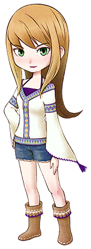
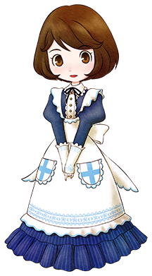
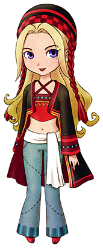
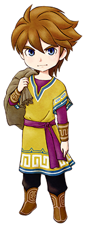
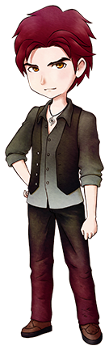

Though she helps her mother and big brother run PoPoultry, Popuri dreams of being swept off her feet and whisked away to the big city. But for now, she'll settle for being treated like an adult.
Karen

Fresh, fun, and feisty, Karen takes nonsense from no one. Her parents own the General Store, and although she loves to cook, her talents in the culinary arts are...questionable, to say the least.
Marie
A librarian and aspiring novelist, Marie is usually found maintaining her father's expansive book collection. She's universally beloved by the patrons who frequent the Library—all two of them.
Elly

Always willing to lend a hand, Elly studies hard as Mineral Clinic's nurse and her ailing grandmother's caretaker. Her little brother loves pulling pranks, much to his already-overworked sister's dismay.
Ran
Bright and cheerful, Ran is often seen cleaning and serving at her father's Inn. A can-do attitude makes her the ultimate housekeeping machine, and she's always up for chowing down on a hearty meal or two.
Jennifer

A free spirit, Jennifer ran away from a life of luxury in the big city to be surrounded by Mother Nature's bounty. From her mountainside tent, this flower child now vibes to the beat of her own bongo.
Eligible Bachelors
Rick
Responsible and sincere, Rick has taken over for his sickly mom and absentee dad as the head of PoPoultry. He may be a tad overprotective of his little sister, but it comes from a place of love.
Cliff

A pensive wanderer, Cliff showed up in Mineral Town looking for a fresh start. He spends his days repenting at the Church, though what sin he feels the need to atone for is between him and the priest.
Gray
An apprentice blacksmith, Gray is often frustrated by the struggle to meet his grandfather's strict expectations. At first he comes across as surly, but beneath the surface is a kind and sensitive soul.
Doctor
As Mineral Clinic's physician, this serious-minded man is well respected by the townsfolk. He works tirelessly to live up to his name, but has recently grown self-conscious of his stern bedside manner.
Kai
A wayfaring city slicker, Kai drifts in with the summer sun and sails out on the autumn tide. His chilled-out attitude is a hit with the guys and gals who visit his Beach Cafe...less so with a certain someone.
Brandon

Eccentric yet passionate, Brandon is a renowned artist taking up residence at the Workshop. While he typically tunes out anything that doesn't spark his muse, he can't ignore a fellow lover of the arts.